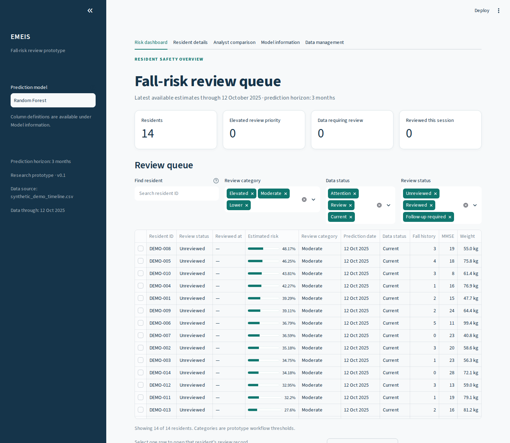
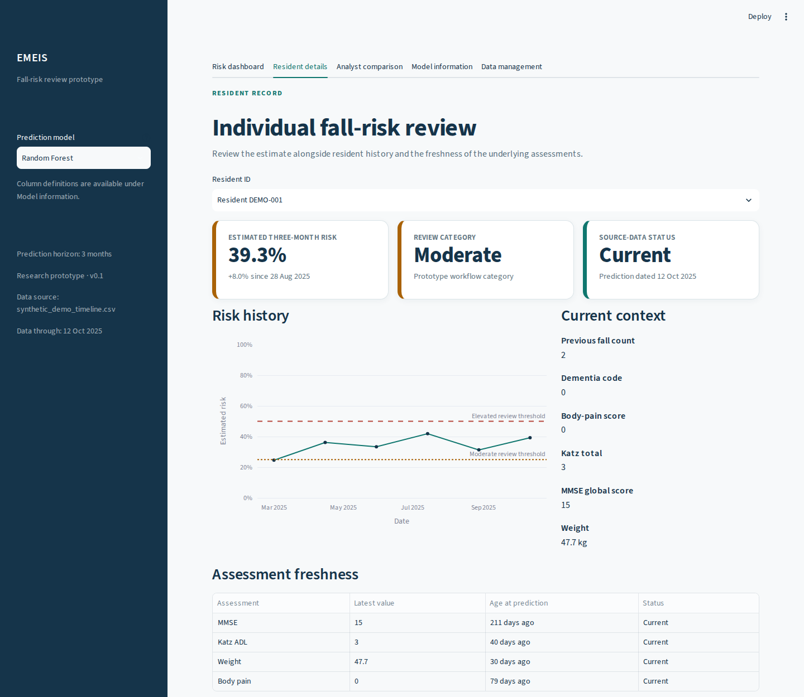
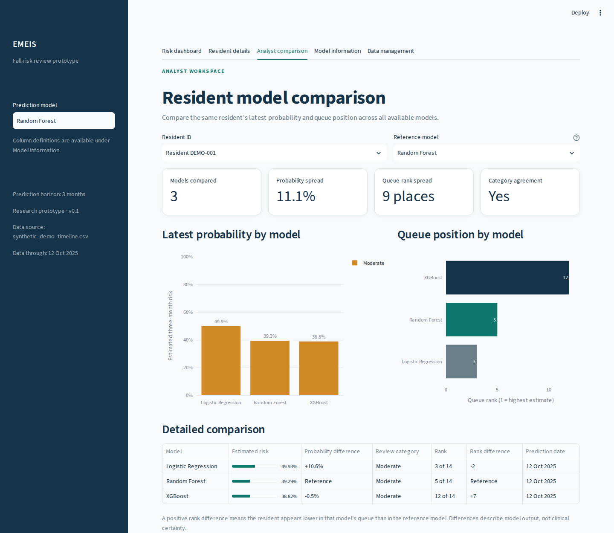

Emeis Internship — Data Preparation, Analysis & ML Application Development · UCLouvain Openhub
Louvain-la-Neuve, Belgium · June – August 2026
A predictive analytics prototype designed to identify fall risk among nursing-home residents by combining multiple datasets, comparing machine-learning models, and presenting resident-level predictions in Streamlit.
Falls can seriously affect older adults' health, independence, and quality of life. The EMEIS project focused on identifying residents who may be at higher risk so that earlier intervention and better-informed decisions could be supported.
The central challenge was turning resident information from multiple differently structured datasets into a reliable analytical dataset and a measurable prediction of fall risk. My work covered the data preparation and integration pipeline, exploratory analysis, model workflow, Streamlit interface, and debugging across these layers.
The Streamlit application provides an overall prediction overview and resident-level prediction/detail views, allowing users to explore model outputs in an interactive interface rather than working only with raw analysis files.
The application also includes information about the model being used, helping connect the displayed predictions to the underlying machine-learning workflow. It was designed as a predictive analytics prototype to support analysis and decision-making, not to replace professional clinical judgment.
The project goal was to identify and understand fall risk among residents. I worked with the available resident information to distinguish potential features from the prediction target and to translate the broader fall-prevention objective into a measurable machine-learning task.
I examined the available datasets to understand their columns, variables, data types, missing values, and relationships. I then cleaned and standardized raw data, handled missing or inconsistent values, aligned column names and formats, and removed unnecessary or duplicate information before modeling.
I determined the appropriate common identifiers between datasets and sorted records so corresponding observations could be aligned. I merged the sources into a more complete analytical dataset, then checked duplicate records, missing matches, inconsistencies, and the final observation and variable counts.
Using Python-based data analysis tools, I examined distributions, patterns, and relationships in the resulting dataset. This exploratory analysis helped identify potentially important predictors and prepared the cleaned data for the modeling workflow.
I prepared the final dataset for predictive modeling and worked with multiple models to compare their ability to generate accurate predictions. The workflow used scikit-learn, XGBoost, and imbalanced-learn, with model predictions evaluated before the selected workflow was connected to the application.
I contributed to the Streamlit application that turned the machine-learning workflow into an interactive user-facing tool. I worked on the overall prediction overview, resident-level prediction/detail views, and model information so users could move from broader results to individual resident predictions.
I diagnosed dependency issues involving joblib, Plotly, imbalanced-learn, and XGBoost, and investigated errors between the data-processing, prediction-generation, and Streamlit layers. I also debugged prediction issues involving variables such as all_predictions and tested components to verify that the application worked as an integrated prototype.
Synthetic data only
Real resident data is under an internship NDA and never leaves that environment. Every screen below runs the actual prototype and the actual trained models against a fabricated dataset — invented resident IDs, invented clinical scores — generated solely to demo the interface. Nothing here is a real person.



The modeling workflow compared multiple approaches for predicting resident fall risk. I used scikit-learn, XGBoost, and imbalanced-learn to prepare models, generate predictions, and evaluate how well the approaches supported the project objective.
| Model | Role in workflow |
|---|---|
| scikit-learn models | Prepared and evaluated for prediction |
| XGBoost | Prepared and evaluated for prediction |
| imbalanced-learn workflow | Supported modeling with imbalanced data |
Model predictions were compared as part of the evaluation workflow, then incorporated into the application's prediction pipeline. The results were intended to support analysis and earlier consideration of potentially higher-risk residents, not to make clinical decisions independently.
Data and modeling considerations
The quality of the predictions depended on the quality and consistency of the source data. Data preparation therefore included checking missing values, inconsistent formats, duplicate records, missing dataset matches, and the structure of the merged dataset before modeling.
The resulting prototype demonstrated how cleaned resident data, predictive models, and an interactive application could work together to support fall-risk analysis.
The Streamlit presentation layer is kept separate from data prep and inference, so a corrected model can be swapped in without redesigning the interface:
streamlit_app.py
├── src/data_loader.py
├── src/feature_engineering.py
├── src/inference.py
├── src/model_comparison.py
├── src/review_store.py
├── src/risk_display.py
└── src/settings.py
I contributed to the data preparation and integration pipeline, including cleaning, sorting, matching, and merging datasets. I analyzed the resulting data, contributed to model preparation and evaluation, connected model outputs to the Streamlit interface, and debugged issues across the data-processing, machine-learning, and application layers. This work was completed collaboratively as part of the EMEIS project.
Built on real facility data under an internship NDA, so the underlying dataset and code stay private. Happy to walk through the data preparation, modeling workflow, Streamlit application, or debugging process directly — over a call or with a redacted notebook.